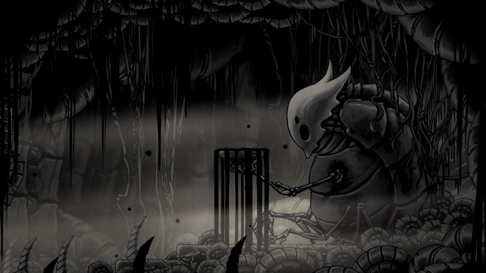
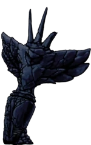
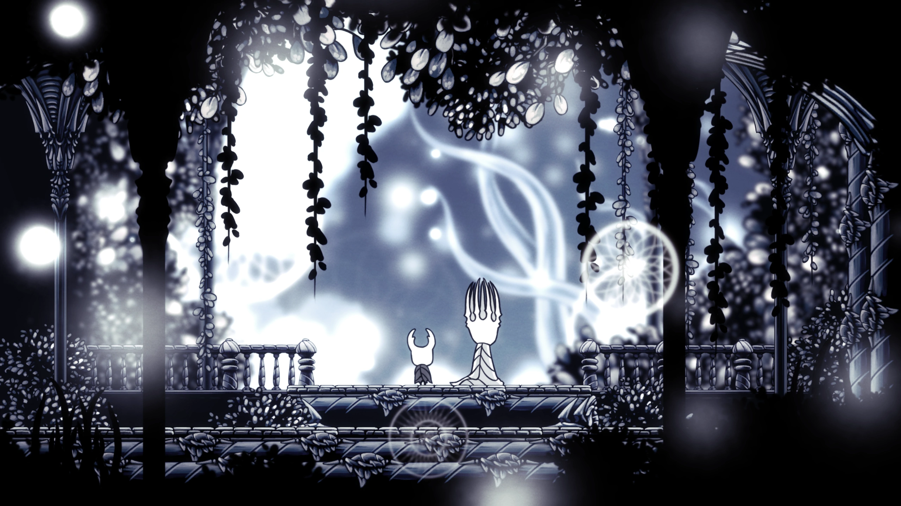
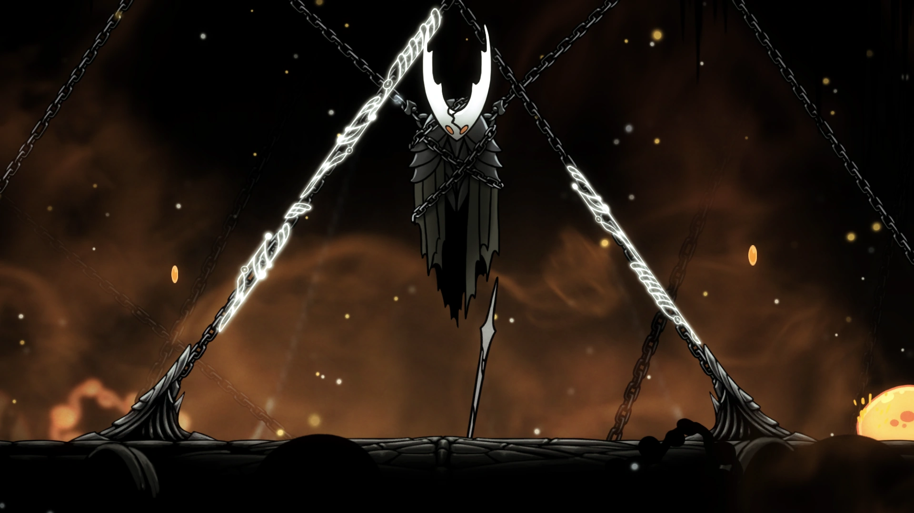

História
No cost too great
O Cavaleiro foi um protótipo de um receptáculo criado para conter uma entidade divina conhecido como Radiância, que há muito tempo governava o reino de Hallownest mas foi esquecida após a chegada do Rei Pálido que trouxe sapiência a todos insetos de hallownest
Após a Radiância ser esquecida, ela perdeu todos seus poderes, mas graças a uma única escultura remanescida no topo de um pico, sua existência foi relembrada e ela conseguiu recuperar seus poderes, iniciando assim uma infecção em toda hallownest que invadia e enlouquecia a mente de todos.
Como uma tentativa de impedir isso, o Rei Pálido criou diversos receptaculos vazios para sela-la, bilhões de suas criações falharam por não serem vazias o suficiente, mas o Cavaleiro Vazio foi escolhido como o mais puro e recebeu a missão de ser o receptaculo da infecção e prender a Radiãncia
Por um tempo, Hallownest manteu paz, porém, o Cavaleiro Vazio não era tão vazio assim e a Radiância o corrompeu, quebrando seu selo e aumentando a infecção ainda mais por todo o reino
Cabe ao Cavaleiro agora abrir o selo derrotando os três sonhadores que auxiliam a prender a Radiância, derrotar o Cavaleiro Vazio e decidir-se se ira se tornar o novo receptáculo ou se enfrentará diretamente a Radiância.
